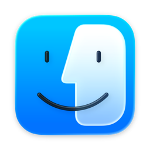
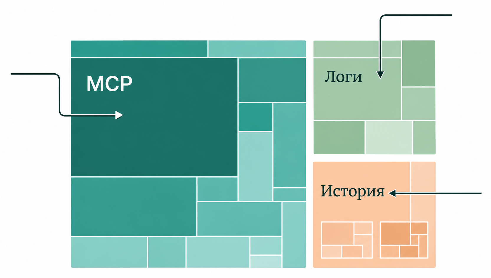

Поймите, чем занят диск вашего Mac
Увидьте большие папки и файлы на наглядной карте.
Демонстрационные данные. Дерево и карта — один взгляд на ваши файлы.
Три шага к понятному диску
Выберите диск
или папкуНайдите, что
занимает место
Удалите ненужное
От общей картины —
к нужному файлу
Выберите папку на карте, посмотрите её размер и перейдите к ней в Finder.
Запись приложения на контрольных данных. Карта, дерево и переход в Finder.
План развития
Что дальше в Folder Atlas
Развиваем инструменты вокруг вашей карты диска.
Сроки пока не назначены. Порядок может меняться.

-
В работе
Разбор диска
с агентом
через MCPОбсудить результат, сохранить выводы и продолжить в новом чате.
-
В планах
Обратная связь
и лог ошибкиЗадать вопрос или отправить диагностику после просмотра.
-
В планах
История и сравнение сканов
Увидеть, что появилось, выросло или исчезло на диске.
Понятно до первого скана
Несколько
важных вещей.
Folder Atlas сам удаляет файлы?
Нет. Он помогает найти большие папки и файлы и показать их в Finder. Что оставить, а что удалить, решаете вы. Удаление выполняется вручную в Finder.
Мои файлы куда-то отправляются?
Анализ выполняется локально на вашем Mac. Folder Atlas читает имена, структуру каталогов и метаданные, не открывая содержимое файлов. Результат скана сохраняется на компьютере.
Подключение внешнего AI-клиента через MCP — отдельное действие пользователя: такой клиент получает запрошенные данные сохранённого скана.
Размер на карте — это место, которое я освобожу?
Карта показывает выделенные блоки файлов и папок. Это не прогноз освобождаемого места: на диске могут быть общие блоки, сжатые файлы и снимки системы.
Недоступные папки отмечаются отдельно, поэтому результат может быть неполным. Неизвестный размер не означает пустую папку.
Сканирование запускается автоматически?
Нет. Вы выбираете встроенный диск или отдельную папку и запускаете скан вручную. При следующем открытии можно вернуться к последнему сохранённому результату.